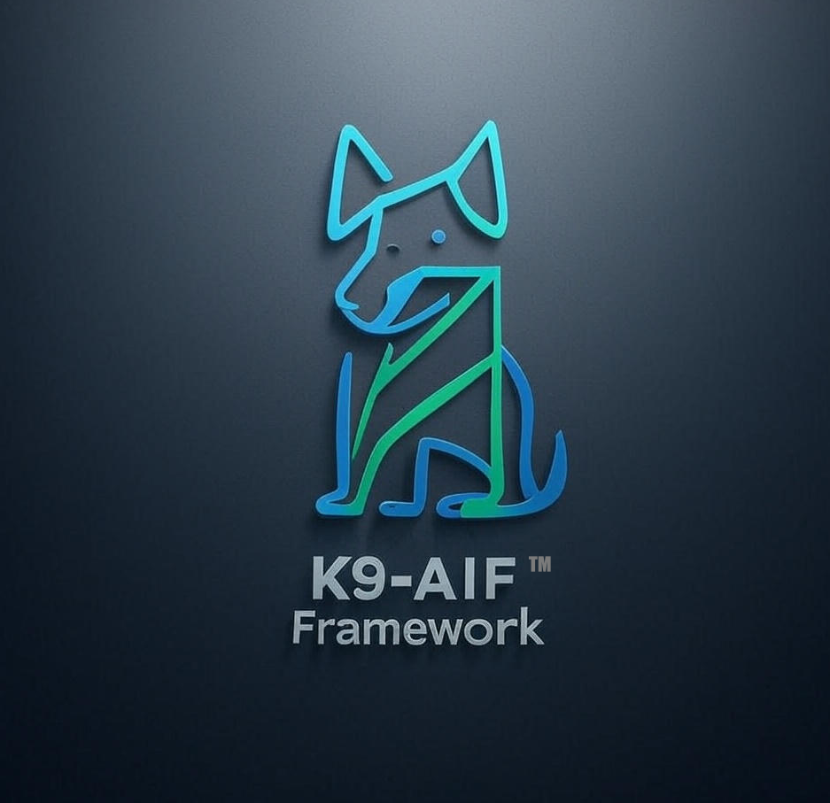
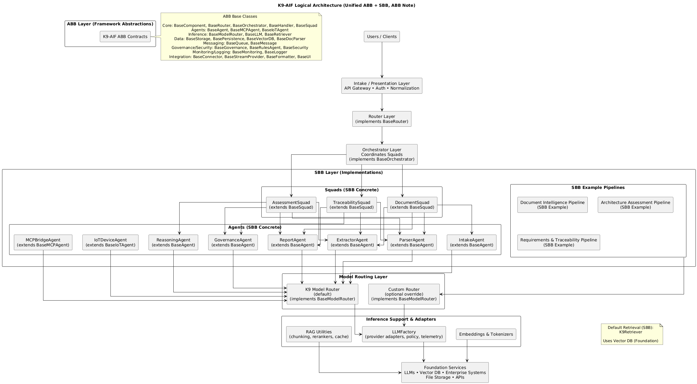

An architecture-first framework for building governable, production-grade AI application systems
K9-AIF is an architecture-first framework for building governed, enterprise-grade multi-agent AI systems. It applies established enterprise architecture principles to agentic AI, enabling scalable, maintainable systems through layered design, clear separation of concerns, and modular building blocks.
Many agent frameworks focus primarily on execution, task coordination, and runtime orchestration. K9-AIF approaches the problem from an architectural perspective — introducing structural patterns that enable multi-agent systems to be designed with clear separation of concerns, and making them easier to govern, extend, and integrate within enterprise environments.
K9-AIF defines how the full agentic AI system should be architected.
The following observations were generated by multiple AI systems after reviewing the public K9-AIF repositories and architecture documentation.
“K9-AIF is one of the most architecturally disciplined approaches to multi-agent AI I’ve seen. It’s not trying to be another orchestration library — it’s trying to be the TOGAF of agentic AI.”
“K9-AIF takes a notably different approach — it begins with architecture.”
“A thoughtful, architecture-first attempt to bring structure to the chaotic world of multi-agent AI systems.”
“K9-AIF treats AI agents as professional tools that require oversight rather than autonomous scripts.”
“K9-AIF approaches agentic AI as an architectural discipline rather than merely an orchestration problem, introducing structural layers and governance patterns designed for enterprise-scale systems.”
“K9-AIF stands out by integrating established enterprise architecture principles (like TOGAF and SOA) with cutting-edge multi-agent AI design.”

K9-AIF layered architecture — click to view full resolution
K9-AIF did not begin as a grand architectural vision. It began as a retrieval capability — and evolved into an architecture-first framework for governed agentic AI systems.
Ravi Natarajan
AI Systems Architect — Agentic AI • Multi-Agent Systems • Enterprise Architecture